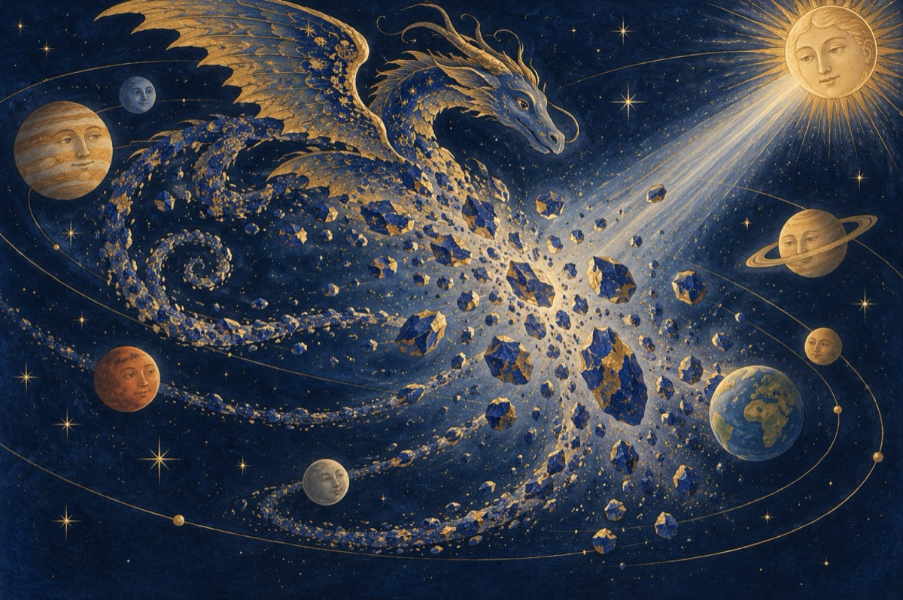

Serial cosmic – 17
Rază Argintie, speriat
De tragedia ce ar fi urmat,
Rugă pe tatăl soare
Să-l lase să facă și el o încercare.
Așa cum soarele deopotrivă
Luminează și săracul și bogatul și binele și răul,
Acesta hotărî și-și învoi flăcăul,
Iar el de la-nceput victoria-și alese,
Vrând pentru-aceasta să câștige inima unei crăiese!
A fost o luptă-nverșunată
Ce-n Univers nu s-a văzut vreodată.
Părea că lumea se dă gata,
Planetele săreau când pe-o orbită, când pe alta
Și cu un jet, se pare, fermecat
Din seva ființei sale
Se năpusti ca să-l doboare
Pe balaurul deznodat și-naripat,
Prelungit și-ncolăcit,
Un enorm, un bulbucat,
Cât vedeai împrăștiat.
Iar acesta explodă precum o bombă mare,
Lovind întreg sistemul cu rămășițele sale
Și care voi pe drept le denumiți
Armata de meteoriți.
Vasile Groza